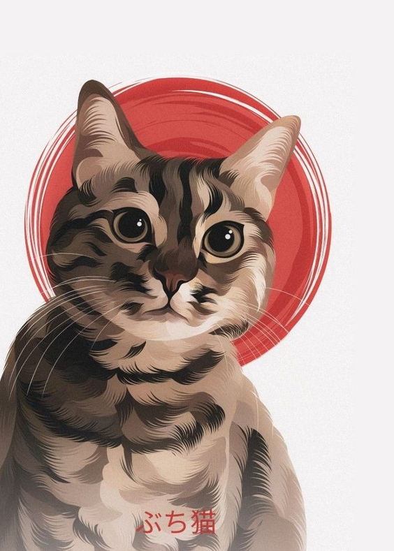
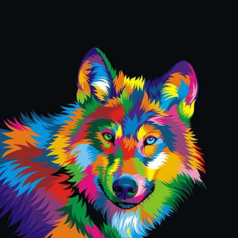
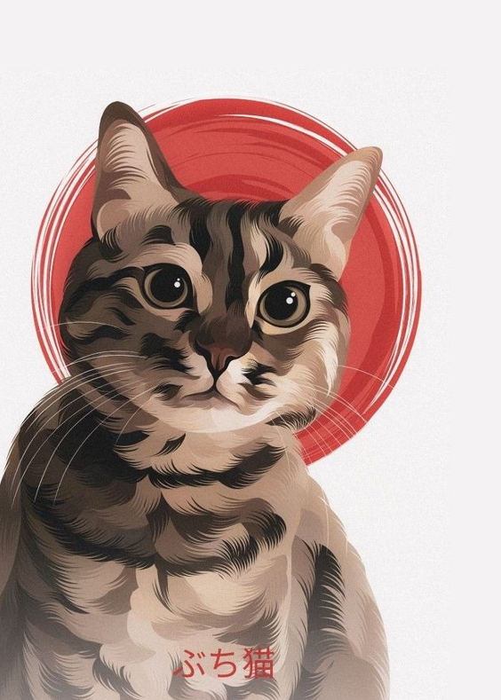
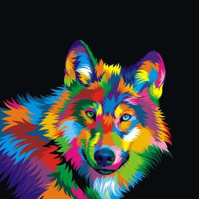
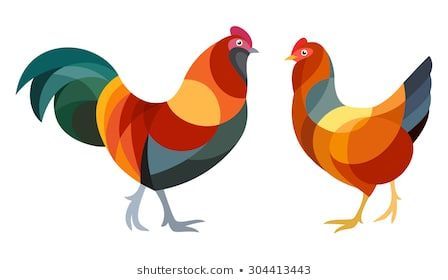
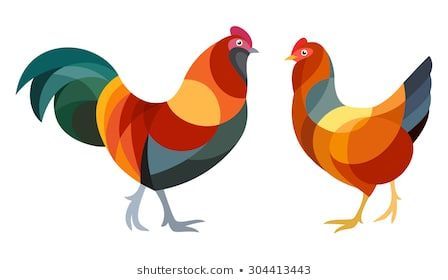
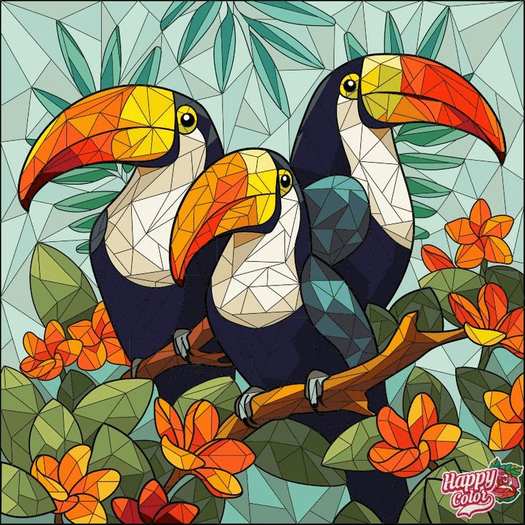
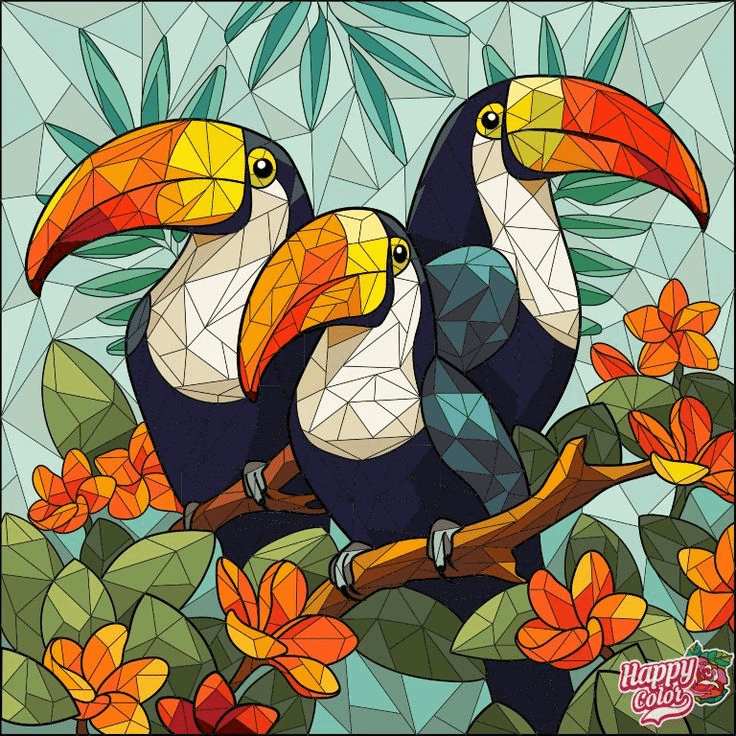

Resumo / ilustrações de resumo
collapse_all expand_allEsse blog faz um compilado de diferentes formas de ilustrar. Veja como ficam alguns gatos ilustrados de diferentes formas.


1. Sombras simplificadas
O formato que a sombra faz no objeto é desenhado. E a quantidade tons é reduzida.
Desenhos animados são pintados desse modo.
Sem contornos
Com contornos


Pelagem de animais feitas nesse estilo
collapse_all expand_allCada mecha tem uma cor solida diferente da mecha ao lado. É trabalho um de ilustração manual, manual e bonito. Esse estilo é melhor para animais de pelo alto.
 



2. Sombras de todas as formas
Poligonos
Trangulos Juntos
Formas Curvas Juntas
 

Artistas que exploram formas curvas
collapse_all expand_allThomas Pavitte
Thomas Pavitte inventou esse estilo de desenho no qual as formas das sombras seguem as curvas de vários círculos de diferentes tamanhos sobrepostos.
Trias Ysa
O estilo dessa artista é inspirado em bolhas de sabão. Veja que nesse caso as formas são bem orgânicas e tem cores solidas (algumas são contornadas). Uma estilização realmente original.


3. Mosaicos de vários formatos
Mosaico de triângulos
Mosaico com retangulos e polígonos curvos
Mosaico de formas curvas

 

Pesquisando por "mosaic illustration", encontramos ilustrações como essas, mas mosaicos reais não tendem a ser feitos somente com triangulos.


4. Desenhos com elementos repetidos
Circulos ou pontos
Linhas
Palavras
Folhas


Sergey Kovalenko usa folhas para representar penas ou pelo.